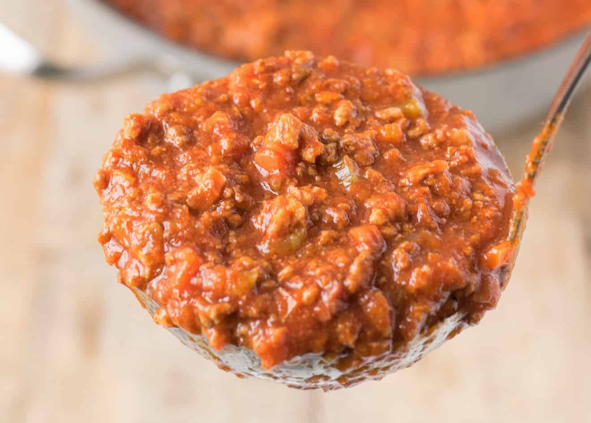

Bolognese
Return to Recipes

Incredible italian sauce ideal for any pasta dish!
Bolognese sauce, also known as ragù bolognese, is a meat-based
sauce in italian cuisine customarily used to prepare Lasagna.
Italian bolognese is a dish that requires different techniques and some time and preparation,
all of which will be listed for your convenience.
Ingredients
- Olive Oil
- 1/2 Kg Ground Beef
- Large Onion
- 3 Large Carrots
- 3 Celery Sticks
- 3 Garlic Cloves
- Tomato Paste
- Dried Oregano
- Dried Basil
- 2 Dried Bay Leaves
- White Wine
- 2 400g Cans of Crushed Tomatoes
- 400ml Chicken Stock
- 300ml Milk
- Grated Parmesan Cheese
- 100ml Heavy Cream
- Salt and Pepper
- Fresh Basil
Steps to Follow
- Peel your carrots and onions
- Wash celery sticks and remove the leaves and the white bottoms
- Dice your vegetables and place them in a bowl for later
- Finely dice your garlic cloves
- In a large stock pot, add a splash of olive oil
- Increase heat to medium-high and wait until the oil shimmers
- Add in your ground meat to the pot
- Once the beef is brown all over, remove from the pot, place it in a heat proof bowl and save for later
- Add in your garlic and stir for 30 seconds
- Add in the rest of your vegetables, a pinch of dried oregano, a tablespoon of tomato paste, and sauté for 2 minutes
- Splash some white wine and scrape the bottom of the pot
- Let the alcohol burn off for 2 more minutes
- Open your cans of tomato and add them, as well as the chicken stock and the milk, to the pot
- Stir until homogenous and add your dry basil
- Wait until the sauce boils, reduce the heat and place a lid partially closed
- Let the sauce reduce for 4 to 5 hours
- After it has reduced, remove from the heat
- Add in your grated parmesan, heavy cream, fresh basil, salt and pepper (to taste) and mix well
- You can serve it immediately or you can let it cool and freeze it for future use!
Return to Top